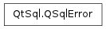

QSqlError ¶

Synopsis ¶
Functions ¶
- def databaseText ()
- def driverText ()
- def isValid ()
- def number ()
- def setDatabaseText (databaseText)
- def setDriverText (driverText)
- def setNumber (number)
- def setType (type)
- def text ()
- def type ()
Detailed Description ¶
The PySide.QtSql.QSqlError class provides SQL database error information.
A PySide.QtSql.QSqlError object can provide database-specific error data, including the PySide.QtSql.QSqlError.driverText() and PySide.QtSql.QSqlError.databaseText() messages (or both concatenated together as PySide.QtSql.QSqlError.text() ), and the error PySide.QtSql.QSqlError.number() and PySide.QtSql.QSqlError.type() . The functions all have setters so that you can create and return PySide.QtSql.QSqlError objects from your own classes, for example from your own SQL drivers.
- class PySide.QtSql. QSqlError ( other ) ¶
- class PySide.QtSql. QSqlError ( [ driverText="" [ , databaseText="" [ , type=NoError [ , number=-1 ] ] ] ] )
-
Parameters: - driverText – unicode
- number – PySide.QtCore.int
- other – PySide.QtSql.QSqlError
- type – PySide.QtSql.QSqlError.ErrorType
- databaseText – unicode
Creates a copy of other .
Constructs an error containing the driver error text driverText , the database-specific error text databaseText , the type type and the optional error number number .
- PySide.QtSql.QSqlError. ErrorType ¶
-
This enum type describes the context in which the error occurred, e.g., a connection error, a statement error, etc.
Constant Description QSqlError.NoError No error occurred. QSqlError.ConnectionError Connection error. QSqlError.StatementError SQL statement syntax error. QSqlError.TransactionError Transaction failed error. QSqlError.UnknownError Unknown error.
- PySide.QtSql.QSqlError. databaseText ( ) ¶
-
Return type: unicode Returns the text of the error as reported by the database. This may contain database-specific descriptions; it may be empty.
- PySide.QtSql.QSqlError. driverText ( ) ¶
-
Return type: unicode Returns the text of the error as reported by the driver. This may contain database-specific descriptions. It may also be empty.
- PySide.QtSql.QSqlError. isValid ( ) ¶
-
Return type: PySide.QtCore.bool Returns true if an error is set, otherwise false.
Example:
model = QSqlQueryModel () model . setQuery ( "select * from myTable" ) if model . lastError () . isValid (): print model . lastError ()See also
- PySide.QtSql.QSqlError. number ( ) ¶
-
Return type: PySide.QtCore.int Returns the database-specific error number, or -1 if it cannot be determined.
See also
- PySide.QtSql.QSqlError. setDatabaseText ( databaseText ) ¶
-
Parameters: databaseText – unicode Sets the database error text to the value of databaseText .
- PySide.QtSql.QSqlError. setDriverText ( driverText ) ¶
-
Parameters: driverText – unicode Sets the driver error text to the value of driverText .
- PySide.QtSql.QSqlError. setNumber ( number ) ¶
-
Parameters: number – PySide.QtCore.int Sets the database-specific error number to number .
See also
- PySide.QtSql.QSqlError. setType ( type ) ¶
-
Parameters: type – PySide.QtSql.QSqlError.ErrorType Sets the error type to the value of type .
See also
- PySide.QtSql.QSqlError. text ( ) ¶
-
Return type: unicode This is a convenience function that returns PySide.QtSql.QSqlError.databaseText() and PySide.QtSql.QSqlError.driverText() concatenated into a single string.
- PySide.QtSql.QSqlError. type ( ) ¶
-
Return type: PySide.QtSql.QSqlError.ErrorType Returns the error type, or -1 if the type cannot be determined.
See also